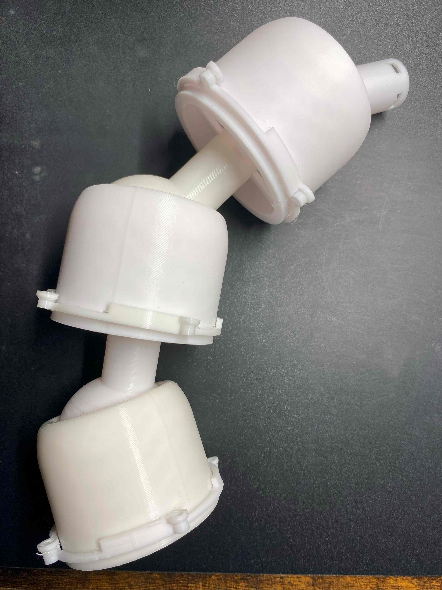
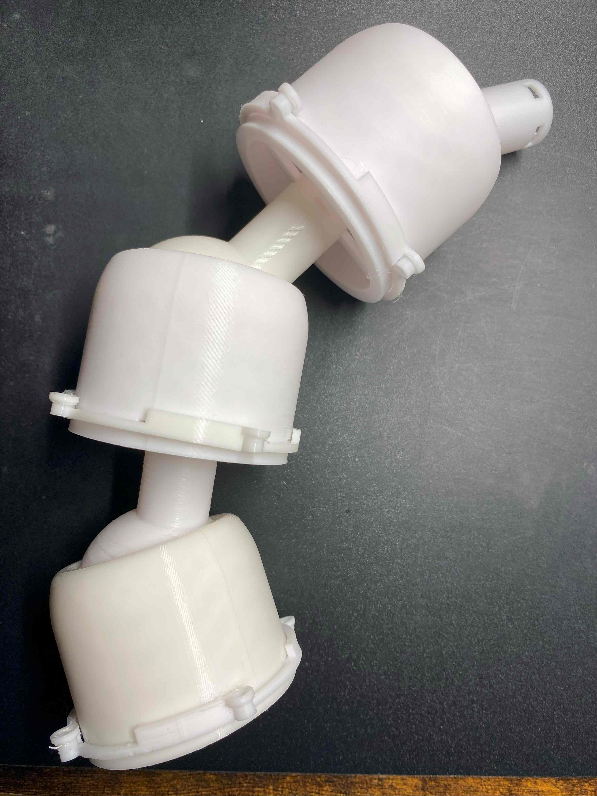

１．進捗と問題
関節制作の進捗：三関節分＝一区画分完成・ひもによる挙動の確認
過程で出てきた問題：ひもがずれるくらい
今後の課題：駆動機関の開発・モーターの購入とテスト
過程で出てきた問題：ひもがずれるくらい
今後の課題：駆動機関の開発・モーターの購入とテスト
２．問題について
今回で目標としていた一区画が完成した
そのためひもで引っ張るときの挙動や軽く重さの確認までできた

ひもの挙動での問題として、手前の関節と奥の関節でひもをそれぞれ独立させる必要があり
結果、駆動部分での考慮が必要となりそうだった
また奥の関節につなげるひもは手前のものの二倍引っ張らなければならなかった
重さに関しては重量約160gであり、ここから全体の重量をざっくりと考えると約550gほどになるのではと考えている
そのためひもで引っ張るときの挙動や軽く重さの確認までできた

ひもの挙動での問題として、手前の関節と奥の関節でひもをそれぞれ独立させる必要があり
結果、駆動部分での考慮が必要となりそうだった
また奥の関節につなげるひもは手前のものの二倍引っ張らなければならなかった
重さに関しては重量約160gであり、ここから全体の重量をざっくりと考えると約550gほどになるのではと考えている
３．総評
関節部分の一区間が完成し、今後の全貌がかなり明らかになった
駆動部分での工夫がかなり必要とされるように感じたが、関節部分のみでいえばかなり順調である
ただし一点のみ、一関節を組み合わせる際のつっかえ棒のようなものが今後重量により壊れる可能性は高い気がする
駆動部分での工夫がかなり必要とされるように感じたが、関節部分のみでいえばかなり順調である
ただし一点のみ、一関節を組み合わせる際のつっかえ棒のようなものが今後重量により壊れる可能性は高い気がする
今後の予想される課題一覧：
強度が今後足りるのか・ひもの引っ張りを利用した構造はうまくいくのか⇒強度面での不安がわずかにアリ
曲げるときにかくつかないか・動作の精密性は良好か⇒やすり等で球があるほうの関節を滑らかにすればOKかも
音声認識はつけたとしてどうするのか・水平装置はどうするか⇒ソフトウェアとの兼ね合いもある
現状から考えて置ける課題:
細かな動きをするために先のほうの構造をどうするのか⇒おもに現在できている部分の縮小版で行けそう
完成像の認識:
何をできるようにするのか＝ものを持てる・取れる・体を支えられる（60～70％くらいのイメージ像）
強度が今後足りるのか・ひもの引っ張りを利用した構造はうまくいくのか⇒強度面での不安がわずかにアリ
曲げるときにかくつかないか・動作の精密性は良好か⇒やすり等で球があるほうの関節を滑らかにすればOKかも
音声認識はつけたとしてどうするのか・水平装置はどうするか⇒ソフトウェアとの兼ね合いもある
現状から考えて置ける課題:
細かな動きをするために先のほうの構造をどうするのか⇒おもに現在できている部分の縮小版で行けそう
完成像の認識:
何をできるようにするのか＝ものを持てる・取れる・体を支えられる（60～70％くらいのイメージ像）